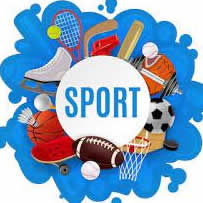

PHILOSOPHY OF SPORT
PHIL 218.01
FALL 2022

INSTRUCTOR: DR. STEPHEN J. LAUMAKIS (DR. L)
OFFICE: 206 JRC
OFFICE HOURS: 7:30-8:00 am M-F & BY APPOINTMENT
PHONE: 962-5363
CLASS HOURS: MWF 10:55-12:00, SEPTEMBER 7-DECEMBER 14, 2022
COURSE DESCRIPTION/GOALS:
Sports seem to occupy a special place in American Culture. Major sporting events are regularly the highest rated television programs and tickets for those events routinely sell out. Why are sports such a huge part of our culture? This course will examine the philosophy of sport, why we play sports and games, what meaning we derive from them and what role they should play in a well-ordered society. It will also examine the intersection of sports, ethics, and law as it relates to how society regulates sports. What laws and morality do we or should we impose on sports? Do the teams and athletes involved in sports receive special treatment in our legal system and in society as well? These and other related questions and topics will be discussed in this course. We also plan to have guest speakers, including: coaches, faculty, and athletic department administrative personnel. Students will be evaluated based on (1) in-class participation, (2) reaction papers, (3) discussion leading, (4) weekly quizzes, and (5) a Final Paper or Midterm & Final Exam.
COURSE OBJECTIVES:
1. Gaining a basic understanding of the subject (i.e., factual knowledge, methods, principles, generalizations, theories). * This objective will be demonstrated by reaction papers, class participation and discussion leading.
2. To acquire skills in working with others as a member of a team. * This objective will be demonstrated by successful class discussion leading.
3. Developing skill in expressing oneself orally and in writing * This objective will be demonstrated by reaction papers, class participation, and discussion leading.
4. Learning to analyze and critically evaluate ideas, arguments, and points of view. * This objective will be demonstrated by reaction papers, class participation, and discussion leading.
COURSE STRUCTURE:
The course will be divided into roughly two parts. Initial classroom presentations by the professor in the first part will lay the groundwork for students to discover and develop their own presentations about philosophical, ethical, legal, and sociological issues related to sports in the second part. Discussions, based on the course texts, articles from the Journal of the Philosophy of Sport, and various Case Studies will strengthen your analytic skills and your knowledge of philosophical, ethical, legal, and sociological matters related to sports. Students will be assigned weekly readings, and be asked to participate in an on-line discussion of the readings as well as prepare a 1-2-page (typed, double-spaced) reaction paper for class each week (10 total). There will be 13 Weekly quizzes (your 10 best will count toward your final grade--and there are NO MAKE-UP QUIZZES. Class time will be devoted to discussion and to student presentations based on the readings. Students are expected to devote about 3-4 hours of study each week to this course.
TEXTS:
Eitzen, Stanley D. ed. (2011) Sport in Contemporary Society: A Critical Sociology of Sport Anthology
Simon, Robert, Et. Al., (2014). Fair Play: The Ethics of Sports (4th Edition)
Selected Handouts and Case Studies
ASSIGNMENTS:
Reading of assigned materials is a MUST in order to introduce you to the subject matter, facilitate class discussion and participation, pose distressing questions, and just plain make you think. The course will begin with a lecture format (two to four weeks at most) as we present an overview of the philosophical, ethical, legal, and sociological issues related to the various aspects of sports. It will then proceed in seminar style with SIGNIFICANT emphasis on student participation. Students will be responsible for four areas of activity: 1) Participation, 2) Reaction Papers, 3) Discussion Leading, and 4) a Final Paper or Midterm and Final Exam.
1) PARTICIPATION includes class discussion of the assigned readings and/or Web postings at the Canvas Threaded Discussion Area arranged for the course.
2) WEEKLY REACTION PAPERS are 1-2 TYPED PAGE(S) in length and are based on pre-assigned readings. These seven (7) papers involve a critical analysis/reflection on the texts. The papers will be evaluated on a 1-5 scale. 1 is missing or deficient (D-F). 3 is an adequate summary with little or no analysis (B-C). 5 is a thoughtful, critical analysis (A).
3) DISCUSSION LEADING consists of forming a group of 2-3 students (by WEEK #2-3), selecting a topic (by WEEK #2-3), and leading class discussion during the week you present the issues involved in your topic. Students will be responsible for leading discussion two times.
4) WEEKLY QUIZZES consist of 13 true/false question quizzes at the Canvas site for the class. The quizzes will typically cover course materials and readings covered in the preceding week's classes. Weekly quizzes will typically be scheduled for Monday of each week. I will use your 10 best quizzes as part of your final grade. There are NO MAKE-UP QUIZZES.
5) THE FINAL PAPER/MIDTERM & FINAL EXAM consists of either a synthesis of your Weekly Reaction Papers into a coherent account of some topic or theme treated in them or an extended (5-10 page?) discussion and evaluation of some topic or theme treated in the course. The Midterm and Final Exam option would be specified at a later date.
ATTENDANCE POLICY:
Attendance is expected. Excessive absence may result in grade reduction. Given the uncertainties surrounding the virus and its potential impact on our class, please familiarize yourself with the SPECIAL GUIDELINES DUE TO COVID-19 FOR COURSE ATTENDANCE. Here are two links: https://www.stthomas.edu/covid19/index.html and https://www.stthomas.edu/_media-library/_documents/covid-preparedness/university-of-stthomas-preparedness-plan.pdf
GRADE DISTRIBUTION:
Participation/Web Discussion (10%) =
Weekly Reaction Papers (20%) =
Discussion Leading (20%) =
Weekly Quizzes (20%) =
Final Paper (20%) =
(Additional 10% added to the above in chunks of 5% points)
OR
Midterm Exam (10%) =
Final Exam (10%) =
(Additional 10% added to the above in chunks of 5% points)
ACADEMIC ACCOMMODATIONS:
Academic accommodations will be provided for qualified students with documented disabilities including but not limited to mental health diagnoses, learning disabilities, Attention Deficit Disorder, Autism, chronic medical conditions, visual, mobility, and hearing disabilities. Students are invited to contact the Disability Resources office about accommodations early in the semester. Appointments can be made by calling 651-962-6315 or in person in Murray Herrick, room 110. For further information, you can locate the Disability Resources office on the web at http://www.stthomas.edu/enhancementprog/